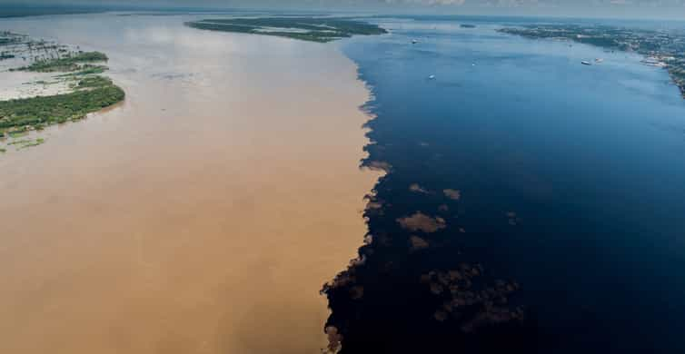

The Amazon Rainforest, often called the "Lungs of the Earth," is the world's largest tropical rainforest. Spanning nine countries, it is home to incredible biodiversity, indigenous cultures, and some of the most stunning landscapes on the planet.
From the towering canopy to the intricate river systems, the Amazon offers endless opportunities for exploration and discovery. It's a natural treasure that inspires awe and highlights the importance of conservation efforts.
The Amazon is home to many unique spots, such as:
Meeting of Waters
An incredible natural phenomenon where the Rio Negro and Rio Solimões flow side by side without mixing, creating a striking visual contrast.

Manu National Park
A UNESCO World Heritage site offering some of the best opportunities to witness Amazonian wildlife, including jaguars, macaws, and giant otters.
Tree Canopy Walkways
Experience the rainforest from above on suspension bridges that allow you to walk through the canopy, providing unique views of the Amazon's flora and fauna.